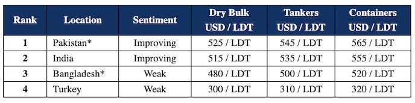

inWeekly Demolition Reports11/09/2023

Another week of speculation has passed in the Indian sub-continent ship recycling markets, as sales continue to register at ever increasing numbers, to increasingly bullish Cash Buyers who certainly seem to be banking on a Q4 revival.
The chief proponents of this most recent and ongoing resurgence are India, and a re-merging Pakistani market that is back and bidding once again, after almost a year on the sidelines amidst political, financial, and disastrous economic chaos that nearly drove the country to a grinding halt.
Bangladesh meanwhile remains stranded at the foot of the sub-continent price rankings for another week, with truly lowball and non-serious offers emerging from any of the currently open Chattogram Recyclers – who themselves are an increasingly dwindling group amidst these most recently limiting L/C restrictions.
As such, it has increasingly turned into a sub-continent market of two, with India and Pakistan at the forefront, duking it out on any available market tonnage.
On the West End, Turkey remains suspended in no-man’s land, with currencies unchanged and fundamentals dancing around levels from last week.
Overall, there has been a noticeable increase in the number of container vessels that were concluded for a recycling sale in recent weeks, and a couple more were confirmed this week as well, including a Sinokor controlled unit at a highly speculative USD 589/LT LDT.
In other news, GMS is proud to announce the roll out of the world’s first Ship Recycling Digital Platform, appropriately entitled the ‘Ship Recycling Portal’. The platform aims to revolutionize the way sales and purchases of ships happen locally into sub-continent markets, by offering a more transparent, efficient, and overall convenient service. The platform was launched at an exclusive event in Bhavnagar, India that was attended by over 80 leading ship recyclers. More info can be found at:-https://bit.ly/ship-recycling-portal
For week 36 of 2023, GMS demo rankings / pricing for the week are as below.

📄 Download PDF: Ship-recycling-market-insight-week-36-2023-Bullish-Week.pdfSource: GMS,Inc. ,https://www.gmsinc.net/gms_new/index.php/web